I'm an automotive mechanical engineer with a master's in ME, and in my day job I use AI agents to run virtual models. Here are sixteen studies covering structures, contact, vibration, fatigue, buckling, plasticity, fluids, heat transfer, vehicle dynamics and design optimisation. Each one starts from written requirements, runs a real open-source solver, and is checked against something independent before I call it a pass or a fail.
Pick any study to see its result here and read how I checked it. The problems are made up, so there's no client data, but every number comes from a saved run that can be repeated from its recorded inputs with one command.
S, MisesMPa
Same surface and colour bands as the render · Drag to turn · scroll or pinch to zoom · double-click to reset
Study 12 · CadQuery · Gmsh · CalculiX · SciPy
Bracket optimisation loop, driven by the agent
PassesThe agent searched 78 designs over three runs for the lightest machined clevis bracket that stays under 100 MPa. The checks threw out its first two answers. The final one is 372 g, 4 % lighter than the start, at 98.3 MPa, and its own mesh study confirms it.Read the full study, just below ↓
Study 16 · CalculiX, friction contact
Bolted joint, slip and opening
FailsFails narrowly: once the joint settles it slips at 2.39 kN, 4.4 % short of the 2.5 kN it must carry. A 15.6 kN preload fixes it, and it stays closed to 13.1 kN.
The question. Two 6 mm steel plates are clamped by an M8 class 8.8 bolt tightened to 15 kN. The joint has to carry a 2 kN side load by friction alone, with a safety factor of 1.25 against slip, so 2.5 kN. It also mustn't open under a 10 kN axial load. Both have to hold after the joint settles. Does it, and if not, what fixes it?
Slips at 2.39 kN, 4.4 % short15.6 kN preload fixes itStays closed to 13.1 kN
No, narrowly. Clamped at 15 kN the interface carries 3.0 kN of friction, but settling (9.5 µm of embedding) costs 3.03 kN of clamp force. That leaves 11.97 kN and a slip load of 2.39 kN, 4.4 % short.
A preload of about 15.6 kN fixes it, keeping 12.5 kN after settling and loading the bolt to 71 % of its proof stress. The joint doesn't open below 13.1 kN.
How I checked it
The friction check is exact where the reference is exact. Each mesh is solved twice, at the real stiffness and with the plates 100 times stiffer. Extrapolating to a rigid interface recovers μ × clamp force to 1 × 10⁻⁷ or better.
The clamp forces balance and the side forces on the two plates cancel, to round-off.
Against VDI 2230's pressure cone, which is an approximation: plate compliance within 18 % and contact diameter within 11 % at the finest mesh.
Mesh refinement at 1.0, 0.75 and 0.5 mm leaves 0.01 % uncertainty on the slip load and 0.035 % on the opening load. The bolt stays within its proof stress, and the plates slide less than the hole clearance.
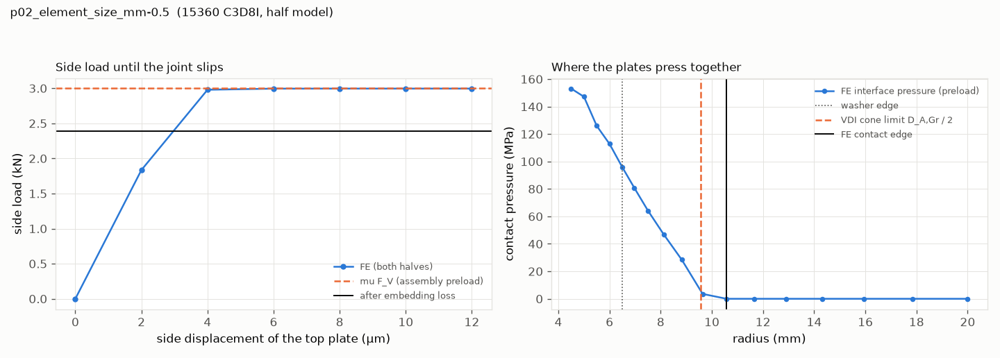
The side load until the joint slips, and where the plates press together, against the VDI cone limit.
What I caught along the way
The slip load came out 0.13 % under μ × clamp force on every mesh, against a 0.1 % tolerance. The friction law, the applied load and the solver's friction all checked out exactly. The decisive test was making the plates stiffer: the shortfall fell exactly in proportion, 1.3 × 10⁻³, then 10⁻⁴, then 10⁻⁵. CalculiX works on the deformed surfaces, and under the side load the interface tilts by about the strain, while the hand formula assumes a rigid, flat interface. So the exact check now uses the rigid-limit extrapolation. Raising the tolerance would have hidden all of this.
One mesh level stalled for four hours while a finer one finished in 22 minutes. It was a convergence stall on that mesh, not cost, and another level replaced it.
The bolt is represented by its clamp force on the washer areas; the shank and threads aren't modelled. The friction coefficient (0.2) and the embedding (9.5 µm) are synthetic and dominate the answer: ±20 % on μ moves the slip load by the same 20 %.
Study 14 · CadQuery, Gmsh and CalculiX, plasticity
Strap proof test, notch plasticity
PassesA 15 kN proof test strains the hole edge to 0.58 %, inside a 1 % limit, and leaves −77 MPa of compression behind, which helps fatigue.
The question. The aluminium strap from studies 2 and 3 (40 × 4 mm, 16 mm hole, 5 kN in service) is proof tested at 15 kN before it's installed. On an elastic model the hole edge would see about 350 MPa, well past yield, while the rest of the section stays elastic. Does the hole edge stay within 1 % strain during the test, and does the test leave compressive stress behind, which helps fatigue?
0.58 % strain against a 1 % limit−77 MPa left at the hole edgeMesh uncertainty 0.05 %
Yes on both counts. The hole edge reaches 0.58 % strain during the test, and the yielding stays local: a plastic zone 1.8 mm deep on a 12 mm ligament. After unloading, the hole edge is left at −77 MPa, squeezed by the elastic material around it.
How I checked it
The notch strain sits between the two classical estimates, Glinka's (0.53 %) and Neuber's (0.64 %), 8 % below Neuber, as expected in plane stress.
The residual stress equals the proof-load stress minus the elastic peak from a separate elastic run, to 2 × 10⁻⁶. That only holds if the unloading is purely elastic, so it checks the solver and the assumption together. It's within 1.6 % of the Neuber-based estimate.
The elastic peak matches Peterson's stress concentration factor to 0.5 %, and the forces balance at the proof load and after unloading.
The net section stays below yield, the plastic zone is contained, and the unloading doesn't yield in reverse.
The hole edge against Neuber and Glinka, and the stress across the ligament at the proof load and after unloading.
What I caught along the way
The first mesh study converged faster than the method allows (order 3.3 against 2), so the convergence check refused to give an uncertainty and the verdict was held back. Dropping the coarsest mesh and adding a finer one gave order 2.1 and 0.05 %.
On the finer set the notch strain barely moves (0.5834 to 0.5835 %), but the differences don't shrink, so the formal check gives no estimate on that run. I left its threshold where I'd set it before the runs. Every mesh of both sets gives 0.581 to 0.584 %.
The material curve is synthetic, a Ramberg-Osgood fit with the 0.2 % proof stress at 276 MPa; a real test would use the batch certificate. Isotropic hardening, which is fine here because nothing yields in reverse.
Study 13 · CalculiX, linear and nonlinear buckling
Strut buckling, with an imperfect strut
PassesThe longest acceptable strut is about 587 mm. The bow costs 4 to 7 % of the buckling load, so a buckling check alone would overstate the capacity.
The question. A 6061-T6 strut with a solid 25 × 16 mm section, pinned at both ends, carries 8 kN in compression. It has to reach twice that, 16 kN, before any fibre yields, allowing for an initial bow of L/1000, a typical straightness tolerance. How long can it be?
Longest about 587 mmTwo routes to the buckling load agree to 0.04 %Mesh uncertainty 0.003 %
About 587 mm. Before first yield, the bowed strut reaches 33.4 kN at 400 mm, 21.8 kN at 500 mm, 15.3 kN at 600 mm and 11.4 kN at 700 mm, so 400 and 500 mm pass and 600 and 700 mm fail.
The bow costs 4 to 7 %. First yield arrives at 93 to 96 % of the elastic buckling load, so a check on the buckling load alone would overstate what the strut can carry.
How I checked it
Two independent routes give the buckling load. The linear eigenvalue analysis and a Southwell plot of the nonlinear run, which reads the critical load from the load-deflection curve alone, agree to 0.04 %. Both sit 0.06 to 0.1 % below Euler with the shear correction.
The first mode is an exact half sine, and the nonlinear response follows the amplification law e₀ / (1 − P/Pcr) to 0.2 % up to 80 % of the critical load. The Southwell fit recovers the imposed bow to 0.3 %.
First yield is within 1.3 % of the Perry-Robertson formula at every length.
Every length is in the Euler range, where elastic buckling governs. A shorter strut would fall in the Johnson range, and the check would flag the elastic analysis as the wrong tool. Mesh refinement at 600 mm leaves 0.003 % uncertainty.
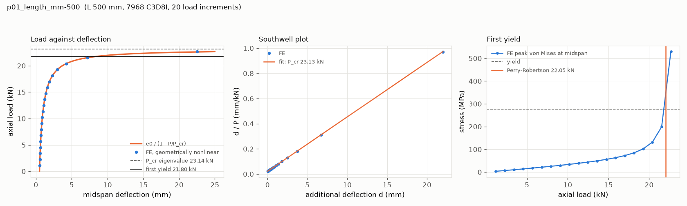
The 500 mm strut: load against mid-span deflection, the Southwell plot, and the stress climbing to first yield.
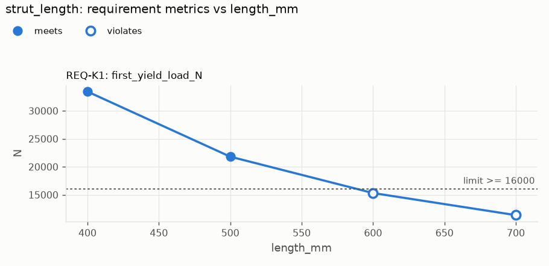
First-yield load at each length against the 16 kN requirement.
What I caught along the way
The mode-shape check failed at first. CalculiX prints the static solution before the first eigenvector, and my parser was reading it as mode 1. Two wrong explanations came first; the record says which one was the cause.
The nonlinear solver's default convergence left the global balance 3 × 10⁻⁶ out. Tighter solver settings brought it to 2 × 10⁻⁷ without touching the tolerance.
Capacity is defined as first yield, so the plastic reserve beyond it isn't used. No residual stresses or load eccentricity beyond the bow.
PassesA track roller carrying 500 N/mm. The contact pressure peaks at 609 MPa against a 650 MPa limit, and the shear under the surface reaches 184 MPa against 200. The CalculiX model lands within 0.4 % of the exact Hertz solution.
Von Mises stress from the CalculiX results. The highest stress sits just under the surface in both parts.
Contact pressure across the patch and shear stress below its centre, both sitting on the exact Hertz curves.
The question. A hardened steel track roller, 100 mm in diameter, runs on a steel plate and carries 500 N for every millimetre of its width. Does the peak contact pressure stay at or under 650 MPa? And does the maximum shear stress below the surface, where rolling-contact fatigue cracks start, stay at or under 200 MPa?
Yes on both. The peak contact pressure is 609 MPa and the maximum shear below the surface is 184 MPa, about 0.4 mm down. That leaves 6 % and 8 % of margin. The contact patch is 1.05 mm wide.
How I checked it
The roller and plate are separate parts that only touch, and CalculiX works out where they're in contact as it solves. I push the roller down a set distance and read the force from the reactions, which is more reliable than applying a force before the parts are touching.
Hertz theory gives the exact contact pressure and the stresses underneath. Compared at the load the model actually carried, 501.1 N/mm, the contact half-width matches to 0.005 %, the peak pressure to 0.4 %, and the depth of maximum shear to within 2 % of one element.
The force on the roller and the reaction under the plate balance exactly. The pressure added up across the patch accounts for the load within 2.2 %, and the surfaces overlap by less than a ten-thousandth of how far the roller was pushed.
I used contact elements of 0.08, 0.04 and 0.02 mm. The two coarser meshes fail some of the Hertz checks, as you'd expect, so the answer comes from the finest one. Mesh uncertainty is 1.2 % on the pressure and 0.15 % on the shear.
What I caught along the way
My first try read the pressure from the element stresses at the surface. That came out 3.5 to 6.5 % high, and it added up to more than the load I'd applied. CalculiX's own contact pressure output was within 0.2 % of Hertz on the same mesh, so that's what the study uses.
The maximum shear agreed across the meshes to 0.06 %, yet the convergence check said it was diverging. I was taking the largest value at any node, and which node lands closest to the true peak changes from mesh to mesh. I left the tolerance alone, changed the measurement to find the peak between nodes, wrote down what I expected first, and kept the failed run. It now passes at 0.15 %.
The first mesh was almost eight times bigger than it needed to be, because the fine region spread across the whole model. That meant 70,820 nodes and 3.5 minutes per solve. Keeping the fine mesh near the contact brought it down to 9,334 nodes and 20 seconds, with the same answer to 0.2 %.
PassesPasses with room to spare at 0.953 mm and 150 MPa.
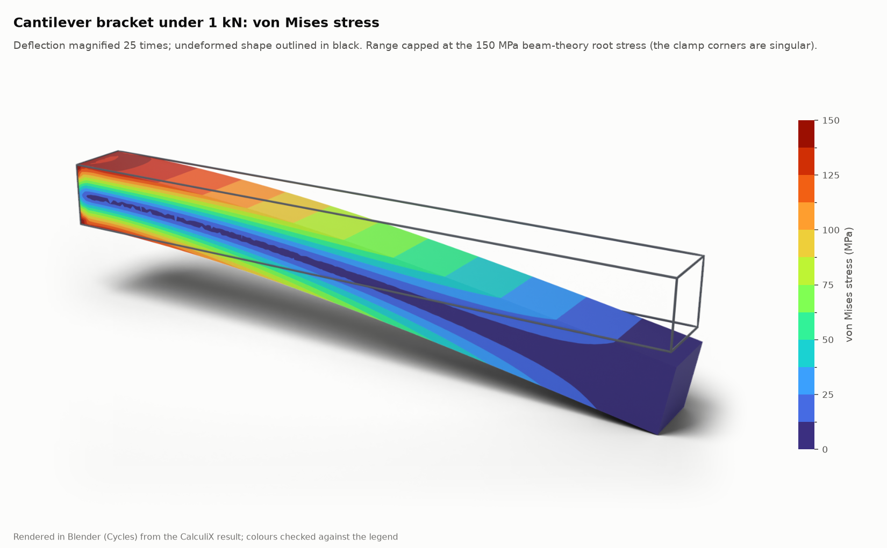
Von Mises stress on the deformed bracket, rendered in Blender from the CalculiX results. It's highest at the clamped end and drops to zero along the middle of the section.
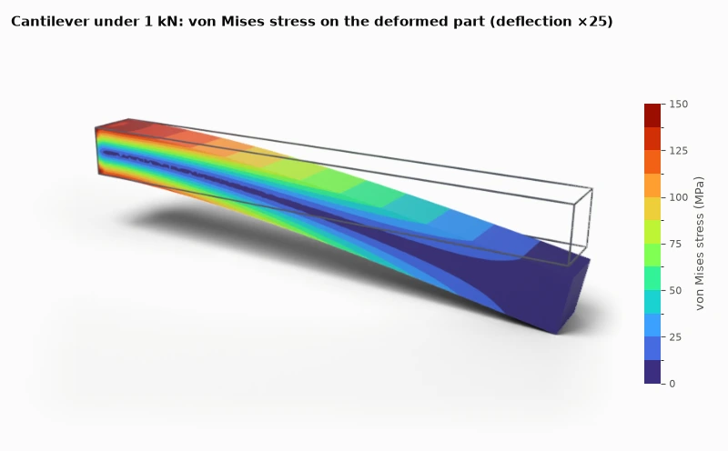
The same result from all sides. At the clamped end you can see the bending stress across the section, highest at the top and bottom faces.
The question. A steel bracket, 200 mm long and 20 × 20 mm in section, takes a 1 kN load at the tip. Does it stay under 1.0 mm of deflection and 213 MPa of stress, and how far can I trust the model?
Yes, with room to spare. The tip moves 0.953 mm and the bending stress at the root is 150 MPa. The mesh uncertainty is about 0.02 %.
How I checked it
The deflection falls between the two standard beam-theory answers, 0.952 mm without shear and 0.960 mm with it. That's where a fully clamped solid bar should land.
The support reactions add up to the applied load, to within rounding.
As I refine the mesh, the answer converges at the rate these elements should give, and that's where the 0.02 % comes from.
The peak stress right in the clamped corner keeps climbing as the mesh gets finer, from 150 to 217 MPa. A perfectly sharp corner does that in any model, so I don't use it. The stress I report comes from the smooth part of the beam, and it matches beam theory at 150 MPa.
Deflection and stress along the beam, next to beam theory.
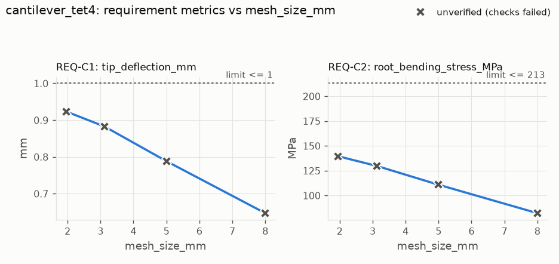
The same study run with the simplest elements. The checks held back every result.
What I caught along the way
I also ran it with the simplest element type, linear tetrahedra. The bracket came out 4 to 33 % too stiff and the stress 7 to 45 % too low, so at face value it would have looked comfortably safe. The beam-theory and mesh checks both failed, and none of those results were reported as verified.
PassesThe hole can go up to about 16.7 mm. 16 mm passes at 117 MPa and 18 mm fails.
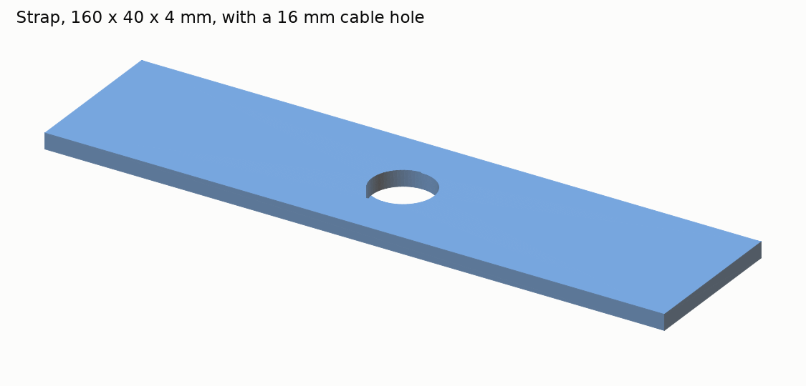
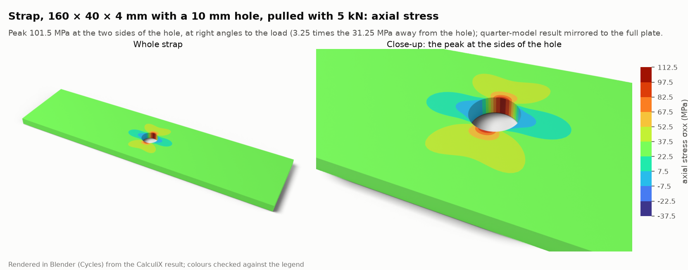
Axial stress over the whole strap and up close at the hole. The peak sits on the two sides of the hole, at right angles to the load.
The question. A 6061 aluminium strap, 40 mm wide and 4 mm thick, carries a 5 kN pull, and a cable needs to pass through a hole drilled in the middle. How big can the hole be before the stress at its edge goes over a 120 MPa fatigue allowable?
Largest hole about 16.7 mmWithin 0.6 % of the handbookMesh uncertainty 0.08 %
About 16.7 mm. A 16 mm hole passes at 117 MPa and an 18 mm hole fails at 125 MPa. I'd call out 16 mm, or 14 mm if there's any doubt about the allowable, which gives 8 % margin.
It makes a useful contrast with the bracket. The peak at a smooth hole edge is a real number that settles down as the mesh gets finer, while the peak at a sharp corner never settles. Telling those two apart is a big part of doing a stress check well.
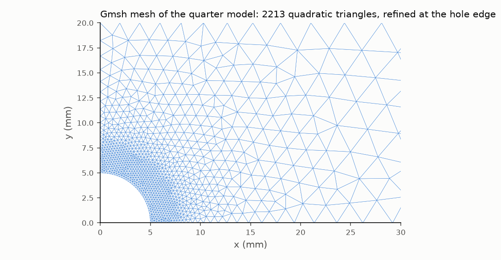
How I checked it
The whole chain is scripted. CadQuery builds the part and writes a STEP file, Gmsh meshes it with small elements around the hole, and CalculiX solves it. Trying a new hole size means changing one number.
The stress concentration factor converges to 2.436, within 0.6 % of the value in Peterson's handbook. I'd written down what I expected before running, and all seven hole sizes came in within about 0.6 % of those numbers.
Run through the same pipeline, a hole in a very wide plate gives three times the remote stress to within 0.1 %, which is the exact answer. That case now runs as an automatic test.
The reactions balance the load, and the stress across the section next to the hole adds up to the full load within 0.2 %.
Going from 1 mm down to 0.125 mm elements at the hole edge converges at the expected rate, with 0.08 % uncertainty left.
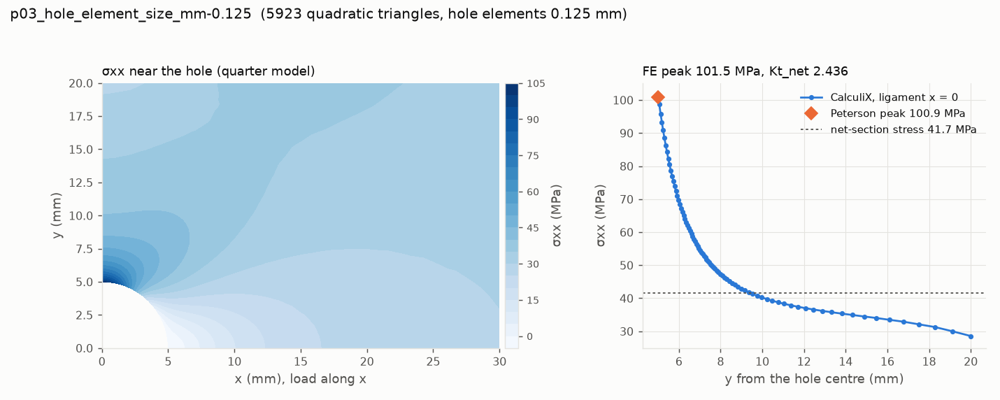
Stress around the hole, and across the section beside it, against the handbook peak.
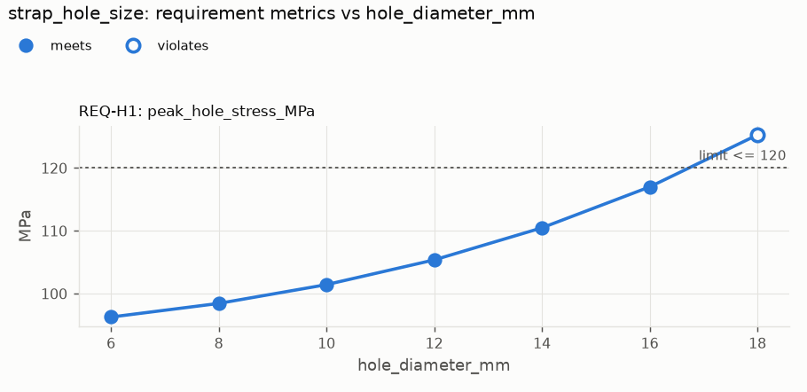
Peak stress at the hole edge for each hole size, with the 120 MPa allowable.
What I caught along the way
My first version converged beautifully, with a tiny mesh uncertainty, to a number 2 % above the handbook. The wide-plate test case should have been exact, but through the same pipeline it came out 1.5 % high. It turned out the solver's plane-stress elements behave partly like a thick 3D slab at this thickness. Modelling a thin slice with the load scaled to match fixed it. A clean mesh study on its own would never have shown that.
The first trial run also hit three setup problems. The solver couldn't read the number format I was writing, one CAD face pointed the wrong way so every element got rejected, and a remeshed model was still pointing at the old node numbers. That last one would have run and balanced its forces anyway, which is exactly why it's worth checking for.
Study 3 · CalculiX feeding a stress-life calculation
Strap fatigue life, chained analysis
PassesLasts easily, and could be rated to 7.8 kN cyclic for 3 × 10⁷ cycles.
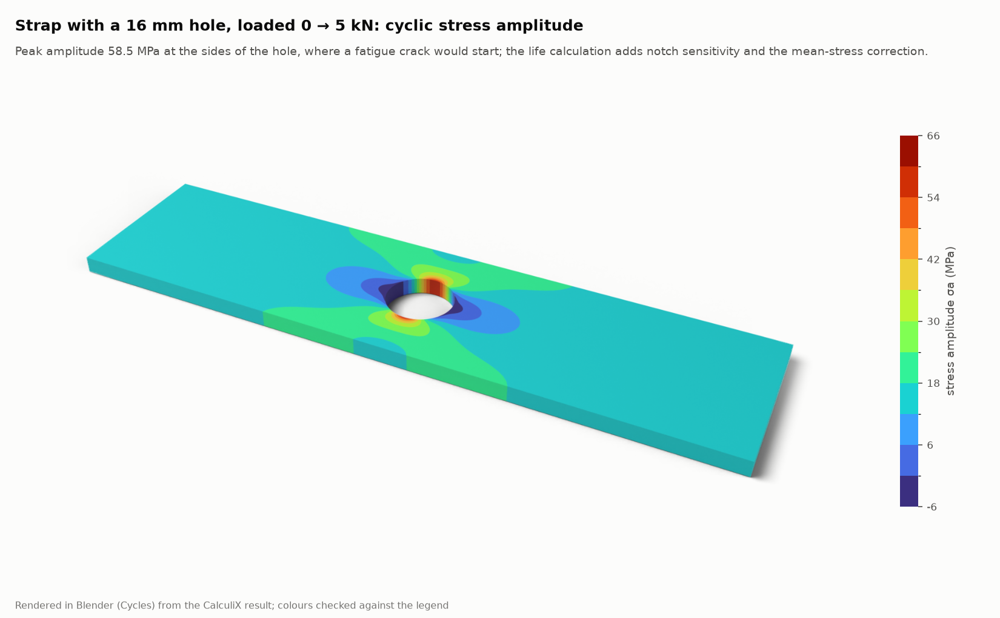
Cyclic stress amplitude for the 0 to 5 kN service cycle. It peaks at the sides of the hole, which is where a crack would start.
The question. Take the strap from study 2 with its 16 mm hole. In service it sees a load from zero up to 5 kN and back, roughly ten million times. With a scatter factor of 3 on life, does it last, and what cyclic load could I rate it for?
Service life about 8 × 10⁹ cyclesRated to 7.8 kN cyclicMaterial data spread: 7.8 to 9.9 kN
It lasts easily. At the 0 to 5 kN service cycle the predicted life is about 8 × 10⁹ cycles, around 270 times what's needed. The highest cyclic load that still gives 3 × 10⁷ cycles is about 7.8 kN. Each of the two published data sets on its own gives either 7.8 or 9.9 kN, so I'd quote the lower figure and explain why.
How I checked it
Each load case reruns the verified strap model to get the stress at the hole edge, and that model's own checks come along with it. Peterson's notch sensitivity gives a fatigue notch factor of 2.15, a Smith-Watson-Topper correction accounts for the load never reversing, and an S-N curve gives the life.
The S-N curve is fitted to 25 published test points for 6061-T6 (Chung and Abel 1988, and Brodrick and Spiering 1972, from the University of Waterloo fatigue database) rather than copied out of a table.
All of that test data is short-life, so ten million cycles is an extrapolation. As a cross-check, the fitted curve extended to 10⁹ reversals lands within 2.4 % of ASM's separately published value of 96.5 MPa at 5 × 10⁸ cycles.
Every life converts back to its stress amplitude exactly, and the notch stays elastic at every load, reaching at most 81 % of yield.
The published test data, the fitted curve, ASM's long-life value and the service cycle.
Fatigue life against peak cyclic load, with the required 3 × 10⁷ cycles.
What I caught along the way
The two published data sets predict lives about 100 times apart at the service load. That's normal in fatigue, where a 10 % change in stress shifts the life by a factor of about 3.4. It's why I give a load rating with its spread instead of a single life number.
Study 4 · CadQuery, Gmsh and CalculiX, modal analysis
Bracket arm vibration, modal analysis
Passes7 mm thick puts the first mode at 261.7 Hz and the weight at 206 g.
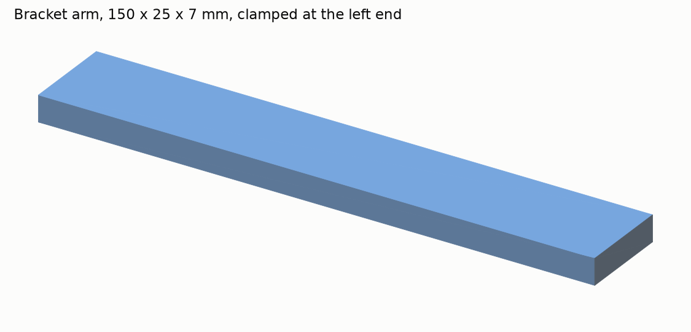
The question. A steel bracket arm, 150 by 25 mm, bolts on near an engine whose second order reaches 200 Hz at 6000 rpm. Its first natural frequency needs to stay above 250 Hz for 25 % separation, and it has to weigh 220 g or less. How thin can it be?
7 mm: first mode 261.7 Hz206 g, within budgetMesh uncertainty 0.03 %
7 mm. At 6 mm the first mode drops to 224 Hz, right in the band I'm trying to stay out of. At 8 mm it's 299 Hz, but the arm weighs 236 g and goes over budget. 7 mm is the only whole-millimetre thickness that does both.
The first four mode shapes from CalculiX. Each one is identified automatically from its effective mass.
The same four modes rendered in Blender. The colour shows how far each point moves.
How I checked it
I built a separate 1D Timoshenko beam model and tested it against the textbook frequencies first. It agrees with the 3D bending modes within 0.9 % and with the in-plane mode within 0.4 %.
The first mode shape matches the beam model almost perfectly, with a modal assurance criterion of 0.99999, and its effective mass is within 0.002 of the textbook 61.4 %.
The torsion mode comes out 3.3 % above the simple twisting formula. I expected that, because the clamp stops the root from warping.
Every thickness landed within 0.7 to 0.9 % of the values I wrote down before running.
What I caught along the way
One of my predictions was wrong. The frequencies converged more slowly than the textbook rate, because the clamped corners are singular. Slower convergence still gives an honest uncertainty, 0.03 % here. Convergence much faster than the textbook rate would have been the real warning sign, and the checks now flag that automatically.
PassesPasses on all three counts, from the coolant flow through the plate's conduction to its thermal stress: 40.99 °C, a 7.20 K coolant rise and 46.8 MPa.
The question. Electronics put 30 kW/m² into an aluminium cold plate over a 50 mm footprint. The 3 mm 6061-T6 plate sits on a 1 mm water channel (25 °C inlet, 0.1 m/s) and is bolted at both ends to a rigid frame, assembled at 20 °C. Does the component face stay at or under 45 °C, does the coolant warm by no more than 10 K, and does the thermal stress in the plate stay under 60 MPa? It builds on study 11, which applied the heat straight to the channel wall.
Component face 40.99 °C, limit 45Coolant rise 7.20 K, limit 10Thermal stress 46.8 MPa, limit 60
Yes, on all three counts, with mesh uncertainty of 0.035 % or less on every answer. The plate spreads heat sideways, so 16.8 % of it reaches the coolant outside the footprint. Held at both ends, the plate can't expand, which puts it in compression at −44 MPa with some bending on top.
How it works
Three solvers run in a chain, and each stage is checked before the next one uses its result. OpenFOAM solves the coolant flow and temperature. CalculiX solves the plate's conduction, and the two are iterated until the temperature and heat flux at the wall agree (26 to 28 passes). Then CalculiX computes the thermal stress with the plate clamped at its ends. One command runs the whole chain at three mesh densities.
How I checked it
The coolant's wall temperature matches the thermal-entry solution with the same heat-flux profile to 0.08 %, and its energy balance is exact to 2 × 10⁻¹².
Every plate node is within 0.012 % of an exact Fourier-series solution, using the film data the plate actually had.
A uniform temperature rise through the same stress deck gives the exact restrained stress to 5 × 10⁻⁸, and the peak stress matches beam theory to 0.06 %.
The heat crossing each handoff balances to 4 × 10⁻⁹ or better, and the whole chain is refined together, not one stage at a time.
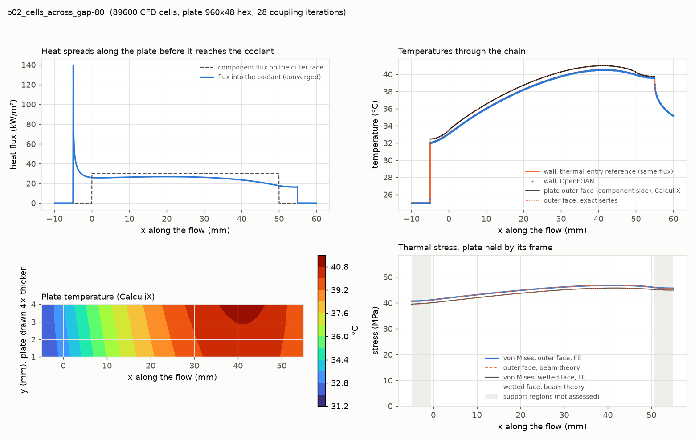
How the heat spreads before reaching the coolant, the temperatures through the chain against both references, and the thermal stress against beam theory.
What I caught along the way
In the first mesh study the error against the reference peaked at 5.5, 2.8 and 6.3 % and didn't shrink. It sat exactly at the plate edges, where the heat flux steps from zero and no mesh or reference resolves the wall temperature. Two gap heights away from each edge it converged at second order, so the check now leaves out that band and keeps its 1 % tolerance.
The coupling loop hit its pass limit on the finer meshes. It was converging, just slowly, because OpenFOAM was solving every inner step to machine precision. Loosening that changed the answers by under 5 × 10⁻⁷ and made each pass three times faster.
It's a 2D slice through the plate and channel, with no side walls or manifolds, constant fluid properties and laminar flow. The plate ends are rigidly clamped; a real bolted end has some give, which would lower the stress.
FailsFails. It needs 33.4 Pa against a 30 Pa budget, and no gap size fixes it.
Velocity across the passage from the 3D check. It's flat over most of the width and drops to zero at the side walls. The volume under this surface has to equal the flow rate, and the render check confirms it does.
The question. A cold-plate passage is a 1 mm gap between two plates, 20 mm long, with water flowing at about 0.1 m/s. It gets a 30 Pa share of the pump's pressure budget, and it needs at least 0.5 Pa of shear on the walls to keep fouling down. Does it meet both if the gap can vary by ±0.05 mm and the coolant can be anywhere from 15 to 40 °C?
Over budget at nominalNo gap meets both requirementsMesh uncertainty 0.04 %
No. At nominal conditions it needs 33.4 Pa, 11 % over budget. Across the tolerance range it needs anywhere from 28 to 42 Pa, and with warm coolant the wall shear drops to 0.43 Pa.
The two requirements pull against each other. To stay inside the pressure budget with cold coolant, the gap has to be at least 1.078 mm. To keep enough wall shear with warm coolant, it can't be more than 0.885 mm. No gap does both. I predicted those two limits before running them, and the confirmation runs came back at 30.02 Pa and 0.500 Pa.
So the fix has to come from the design side. The options are a narrower coolant temperature range, a bigger pressure budget, a different flow split between channels, or a second look at the shear guideline.
How I checked it
The model is a steady 2D flow simulation that includes the supply header and a smooth contraction into the channel. I count the flow's kinetic energy at the exit as lost, which is the usual conservative assumption. That exit loss is 7.7 Pa of the 33.4.
Once the flow has settled, the velocity profile, pressure gradient and wall shear match the textbook exact solution within 0.02 %.
Mass is conserved to about one part in a hundred million, and wall friction balances the pressure force within a few parts in a hundred thousand.
Going from 20 to 80 cells across the gap converges at exactly the expected rate, leaving 0.04 % mesh uncertainty.
A hand calculation, using lubrication theory for the header and the Shah and London correlation for the channel, agrees within 0.3 % in every case.
I checked the 2D assumption with a separate 3D model that includes the side walls of a 20 mm wide channel. The side walls add 3.2 % friction, and the exact rectangular-duct solution says 3.25 %. That's about 0.8 Pa more, which only makes it a clearer fail.
Source of uncertainty
How big it is
The mesh
0.04 %
Iteration and conservation
Negligible, well under one part in ten thousand
Simplifications in the model
0.3 % or less against the hand calculation, plus about 3 % from the side walls
Manufacturing tolerance and coolant temperature
16 % below to 27 % above nominal. This outweighs everything else.
Water velocity through the supply header, the contraction and the 1 mm channel. The height is stretched so you can see the channel.
On the left, the velocity across the gap sits on the exact solution. On the right, the pressure drops through the contraction and then follows the exact slope, and the flow settles within the predicted entrance length.
Both requirements across the tolerance cases. The grey cross is a case the checks held back because the flow hadn't fully settled.
The 3D side-wall check, with velocity across the width and across the gap compared against the exact rectangular-duct solution.
What I caught along the way
My first model pushed a perfectly uniform flow straight into the channel, which is a common shortcut, and it said the channel passed at 28.6 Pa. But the pressure kept creeping up as I refined the mesh and never settled, which usually means there's a sharp corner the solver can't resolve. The mesh check failed, so that answer was never reported as verified. Adding the supply header fixed it, and once I counted the exit loss the answer went from a pass to a fail.
With warm water and the widest gap, the flow was still developing slightly where I take the measurements. That case is marked unverified, and the conclusion stands on the other four.
My first 3D mesh was coarsest right where it needed to be finest, next to the side walls. The overall friction still looked fine, but comparing the whole velocity field point by point failed every time, always next to the wall. Averages can hide local errors, so I compare the full field too.
PassesThe tip sits at 73.2 °C, and still 65.9 °C with every input at its worst.
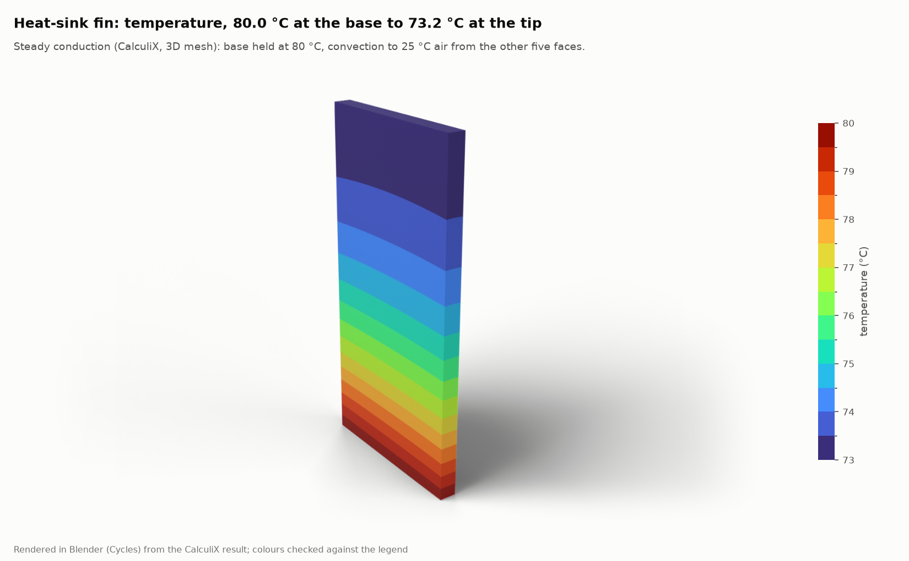
Temperature over the 3D fin, from 80 °C at the base to 73.2 °C at the tip. The bands bunch up near the base, where most of the heat is flowing.
The question. One fin of a heat sink is 6061 aluminium, 40 mm tall, 20 mm wide and 2 mm thick. The base is at 80 °C and the air is at 25 °C, with a heat-transfer coefficient of about 25 W/m²K. Does the tip stay above 60 °C, and how sure can I be?
Tip 73.2 °C, 13 degrees of marginWorst case 65.9 °CNumerical error under 0.001 °C
Yes, comfortably. The coldest point on the tip is 73.2 °C. Even with every input at its worst at the same time (double the air-side coefficient, the lowest likely conductivity for this alloy, and every dimension at the cold end of its tolerance) the tip still sits at 65.9 °C.
The air-side coefficient matters most. The tip only gets down to 60 °C if that coefficient climbs to about 95 W/m²K, almost four times the estimate. The other realistic way to fail is a poor joint between the fin and the base. If the fin root only reaches about 65 °C instead of 80, the tip drops to 60 °C, so that's what I'd check on the real part.
How I checked it
It's a full 3D heat-conduction model in CalculiX, losing heat to the air from every exposed face, with the mesh generated in code.
The textbook 1D fin solution agrees with the 3D result within half a thousandth of a degree along the whole fin. I wrote down the expected values before running, and every result came within a tenth of a degree of them.
The heat going in at the base matches the heat leaving through all the surfaces.
Going from 2 mm to 0.25 mm elements converges at exactly the expected rate, leaving under a thousandth of a degree of numerical uncertainty.
The temperature through the thickness is uniform to a few hundredths of a degree, so comparing against a 1D textbook solution is fair.
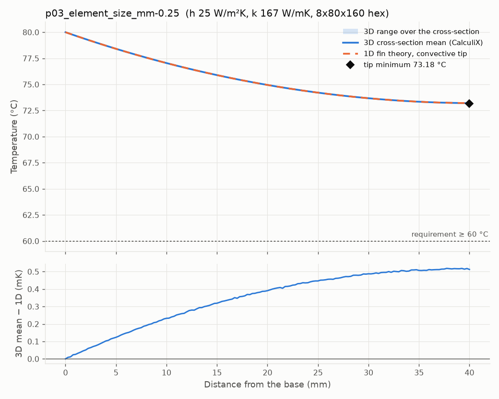
Temperature along the fin. The 3D model sits on the textbook solution.
How high the air-side coefficient can go before the tip drops below 60 °C.
What I caught along the way
The base heat flow CalculiX reported was 1.3 % short of the heat leaving the surfaces, because the solver leaves out the convection on the base nodes themselves. With that added back, the energy balance closes exactly.
On the finest meshes, the change in tip temperature was about the same size as the rounding in the solver's standard output, which made convergence impossible to judge. I switched to a higher-precision output so rounding can't decide it.
An AI agent built this study working only from my written procedures. I set it up as a test of whether those procedures produce verified work on a problem they hadn't seen before.
PassesPasses, verified: the wall peaks at 44.03 °C against 45, and the coolant warms 7.2 K. A finer mesh study was needed to settle the peak.
The question. A cold-plate passage, 1 mm deep, carries water at 25 °C and 0.1 m/s. Electronics heat both walls at 30 kW/m² over 50 mm. Does the wall stay at or under 45 °C, does the coolant warm up by no more than 10 K, and how much heat flux could the passage take?
The coolant warms up by 7.2 K, inside its 10 K budget, and that result is verified. The energy balance closes to about one part in a trillion on every mesh.
The wall peaks at 44.03 °C, 0.97 K under the limit, and it matches the independent reference within 0.6 %. My first mesh study couldn't put a number on the peak's uncertainty, so I held that verdict back. A rerun on finer meshes (40, 80 and 160 cells across the gap) settled it: 44.097, 44.029 and 44.029 °C, an uncertainty of 0.23 % of the temperature rise. With 40 cells across the gap, the wall reaches 45 °C at about 31 kW/m².
How I checked it
I compared against the thermal-entry (Graetz) problem, solved separately and checked against the textbook fully developed Nusselt number and the energy balance. The CFD wall temperature matches it within 0.03 to 0.6 % of the temperature rise.
Heat in equals heat carried out to about one part in a trillion, and the temperature field stops changing to within 10⁻¹¹ of the rise.
The separate reference matters here because the flow is still thermally developing at the end of the heated section. The Nusselt number there is 8.34 rather than the textbook 8.24, so a hand calculation that assumed developed flow would be slightly off.
What I caught along the way
The standard scheme overshoots by 0.06 to 0.11 K at the last heated cell, which is exactly where the peak is. It errs on the safe side, but it's why the first mesh study couldn't settle the peak. On finer meshes the overshoot shrinks and the peak moves upstream, which is why it took 160 cells across the gap to settle.
I tried four bounded schemes that get rid of the overshoot. All of them flip-flopped from one iteration to the next and never closed the energy balance, and under-relaxation just hid the problem. I went back to the scheme that converges exactly and let the checks bound its error. I kept every failed run and didn't change any tolerances.
Depends on speed600 to 1000 N·s/m works at 18 km/h. At 36 km/h the wheel leaves the road.
The question. For a compact car's front corner, which damper rates between 600 and 3500 N·s/m meet the targets for ride comfort, suspension travel and tire load? I tested it over a speed bump and over a rough road.
Speed bump: 600 to 1000 N·s/m36 km/h: wheel leaves the roadBump stop: harsher at light dampingRough road: comfort not metTwo tools agree to one part in a million
Over a 40 mm speed bump at 18 km/h, anything from 600 to 1000 N·s/m meets all three targets. At 1500 it just misses the comfort limit, 4.18 against 4.0 m/s², and at 3500 the tire load goes over.
Over the same bump at 36 km/h, nothing works. The wheel leaves the road at every damper setting, for 32 to 59 ms, and comfort and road holding fail across the board. A damper change can't fix that. It needs a lower speed, a softer tire or a gentler bump.
Adding a bump stop makes light damping worse. At 600 N·s/m the suspension compresses past the 40 mm gap to the bump stop. With the stop in the model, the peak body acceleration more than doubles, from 5.2 to 11.3 m/s², and the stop still runs past its 8 mm of stroke at 2.8 kN against a 2.5 kN rating. From 1000 N·s/m up, it stays within its rating.
Weighted the way people actually feel vibration (ISO 2631-1), the rough-road ride rates as uncomfortable at 1000 N·s/m (1.01 m/s²) and gets worse with more damping, up to very uncomfortable at 3500 (1.64 m/s²). The raw, unweighted acceleration overstates it by 10 to 29 %.
On a rough road at 72 km/h, no damper rate meets the comfort target, while travel and tire load need at least about 1500. Those pull in opposite directions, so the real fix is a different spring rate.
How I checked it
Over the speed bump, the simulation matches an independent exact solution of the same equations, and the energy going in balances the energy stored and dissipated. All 30 checks pass. I also built the same car from standard components in OpenModelica, and it agrees with the Python model to about one part in a million.
The bump stop is just one more switch in the same exact solution. The model and the reference agree on every time the stop engages and releases, and on the motion to a few parts per billion of the bump height.
The tire can push but not pull, and the solver stops exactly when the wheel leaves the road and again when it lands. I built an exact solution for this independently, using matrix exponentials within each phase and root-finding for the switch times. It agrees on those times within a tenth of a nanosecond and on the motion to about two parts per billion of the bump height.
My ISO 2631-1 weighting filter matches the standard's own table within 0.1 %. My first version came out at exactly double the table, and that comparison is what caught it.
On the rough road, the simulated vibration levels match the prediction from the frequency response within one part in ten billion.
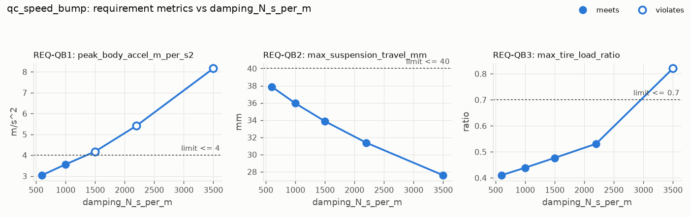
Each requirement against damper rate over the speed bump.
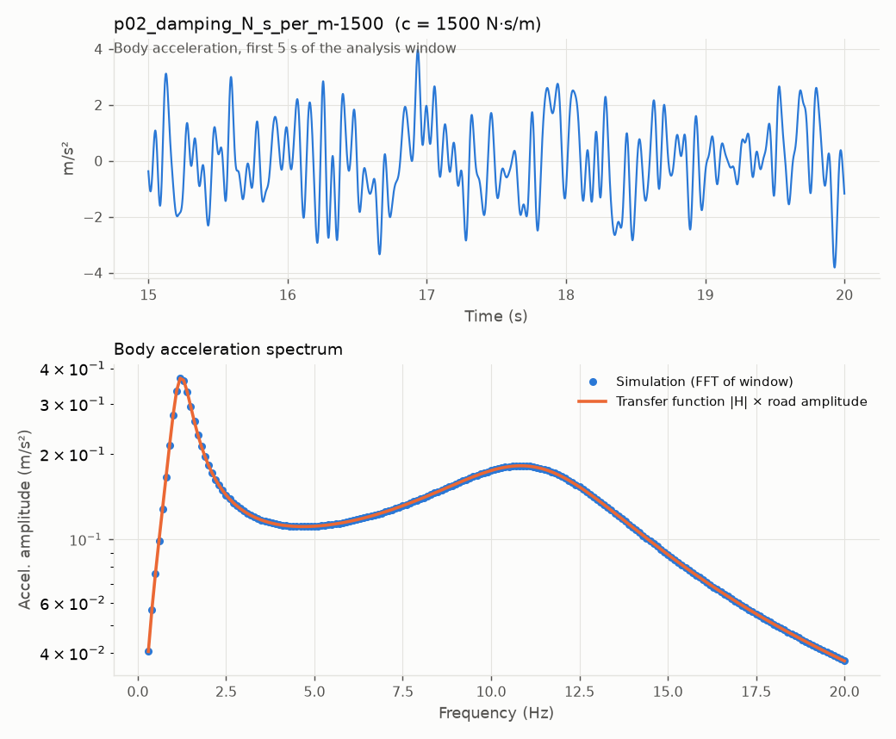
The rough-road simulation against the frequency-response prediction.
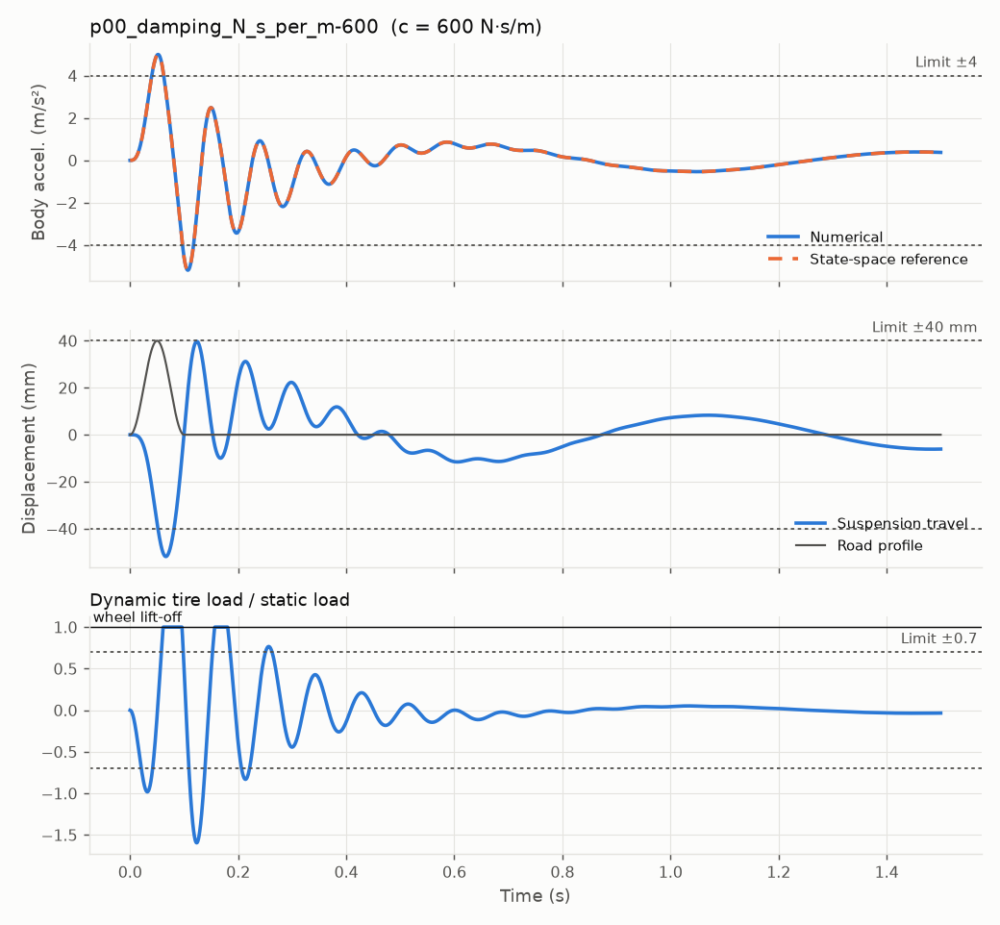
At 36 km/h and 600 N·s/m, the tire load sits at zero twice while the wheel is in the air, and the landing spikes it to 2.6 times static. The simulation follows the exact solution the whole way.
What I caught along the way
I first ran the bump at 36 km/h. Every numerical check passed, but the check on whether the wheel stays on the road failed at every damper rate, with the tire load swinging to as much as 1.7 times static. A linear tire model can't handle a wheel leaving the ground, so I didn't report any of those results as a pass or a fail. I kept that run and added a case at 18 km/h.
Then I built the model that check was asking for, a tire that can leave the road, and wrote down five predictions first. It turned out the linear model had overstated the peak body acceleration by up to 29 %. After the crest, the linear tire pulls the wheel back down, which a real tire can't do, and a stiff damper passes that pull straight into the body. The other surprise was that the worst moment for the tire is the landing. With light damping the wheel bounces twice and comes down hard enough to load the tire to 2.6 times its static load.
PassesOnly the 9 mm (M8 clearance) hole meets both the weight and edge-distance rules.
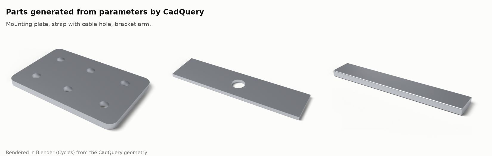
The question. An aluminium plate, 120 by 80 by 6 mm, has a grid of six holes. Which clearance hole size, from M5 up to M12, keeps the plate at 150 g or less while leaving at least twice the hole diameter between each hole and the edge?
9 mm (M8 clearance) meets bothAll 40 checks pass
Only the 9 mm hole works, the M8 clearance size. Bigger holes save weight but eat into the edge distance, and smaller ones do the opposite.
How I checked it
Every number is measured from the finished solid instead of being taken from the inputs. That includes the volume, the overall size, and the position and diameter of each hole.
The volume matches a hand calculation to the limit of floating-point arithmetic.
Each plate is exported as a STEP file, read back in and confirmed unchanged.
PassesAll 72 checks pass, and the two tools agree to a few parts per million.
All 72 checks passTwo tools agree to a few parts per million
This was the first study, and its job was to prove the workflow on a problem with a known answer. It's a single mass on a spring and damper, hit with a step force, at six levels of damping. The results are checked against the exact textbook solution, an energy balance, the final resting position and the solver's own convergence.
What I caught along the way
When I was hooking up OpenModelica, the check that results land on the requested time points failed. OpenModelica was quietly ignoring some of the settings I passed it. I changed how the settings get passed, and that check has been watching for it ever since.
"Not met" is still a verified answer. The design fails, and the study explains what would fix it. "Withheld" means the checks didn't support calling it either way.
How these images are checked
These images are rendered in Blender straight from the solver output. Before one goes on the page it has to pass three checks. The rendered surface has to enclose the part's actual volume, which catches missing or flipped faces. Every coloured pixel has to match a colour in the legend, which catches a shader that has shifted the contours. And the lit image has to read as the right band, which catches a shaded face that looks like a different value. Most results can also be turned in 3D: that view uses the same surface and colour bands, and it's checked the same way from four angles.
Featured · study 12 · design automation
The agent designs a lighter bracket
A machined aluminium clevis bracket on a vibrating machine carries an inclined 4.8 kN pin load. The parts around it fix the base, the lug outline and the fillets. An optimiser run by the agent picks the lug thickness, the gusset thickness and the gusset height to make the bracket as light as possible. The peak stress has to stay at or under 100 MPa, a fatigue rating, and the pin can move at most 0.10 mm. Every design it tries is built, meshed, solved and checked like any other study.
Mass of the chosen design
372 g
4 % lighter than the starting design. The 270 g base plate is fixed, so the parts the optimiser could change lost 13 %.
Designs tried
78
Over three optimisation runs. The checks threw out the answers of the first two.
Peak stress
98.3 MPa
At the fillet where the lug meets the base, on the finest mesh. With the mesh uncertainty added it's 98.9 MPa, still under 100.
Pin deflection
0.079 mm
Against the 0.10 mm limit. Stress governs this design, not stiffness.
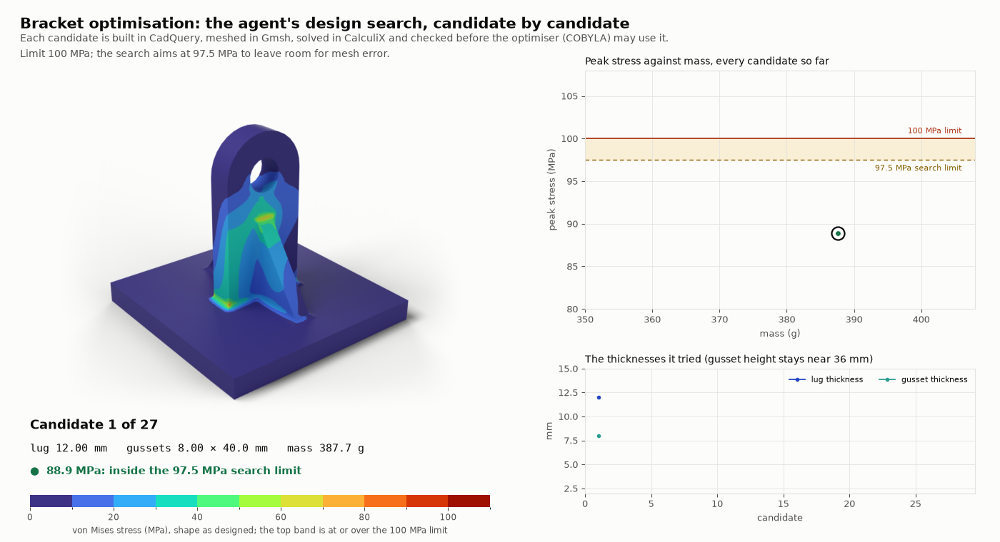
The final search, one frame per candidate: its CalculiX stress, its peak stress against its mass, and the thicknesses tried. It closes in on about 370 g, but the candidates there land either side of the search limit by mesh noise, so the only one that passed was the starting design. The last frame is design D, chosen from those candidates by a fitted response surface.
How the loop works
ProposeCOBYLA, an optimiser that needs no gradients and handles limits, picks the three dimensions.
BuildCadQuery draws the solid and exports a STEP file. Gmsh meshes it with quadratic tetrahedra, 4 mm overall and 1 mm on the fillets.
SolveCalculiX computes the stresses and the pin deflection, with the load applied through the pin and the base held.
CheckThe study's full set of checks runs. A design that fails any of them counts as infeasible, whatever its numbers say.
RepeatThe optimiser steps toward lighter designs that pass until its step can't shrink any further. Each run is one command.
Rejected designs can't steer the search
2.5 % margin kept for mesh error
Predictions written before every run
Start · 387.7 g · peak 88.9 MPaDesign D · 372.0 g · peak 97.4 MPa
050100 MPa limit
Before and after: drag across to compare. The optimiser thinned the lug and shortened the gussets, but made the gussets slightly thicker. That's the cheapest way to support the fillet where the stress peaks. The tops of the gussets, where they meet the lug, come close behind at about 95 MPa. Both on the optimisation mesh, one camera and one stress scale; each image passes the render checks.
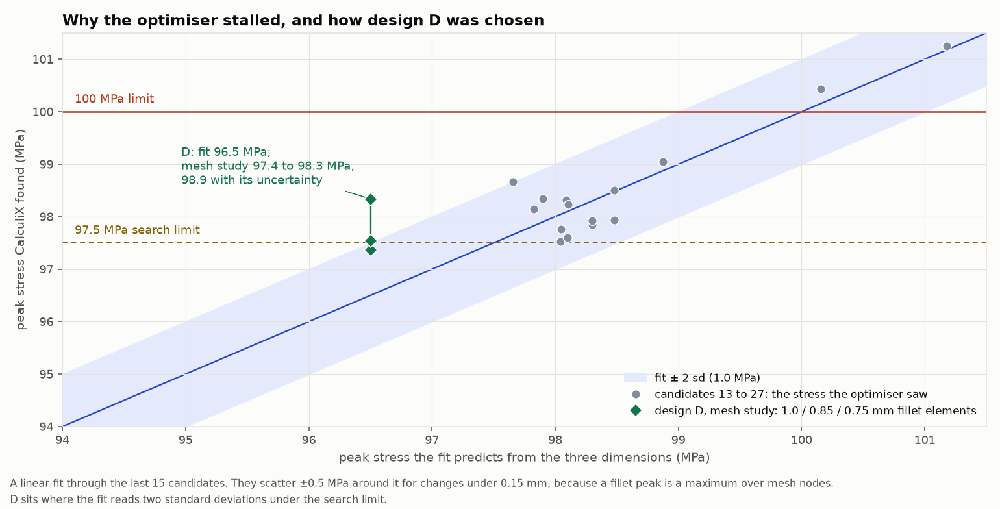
Why the optimiser stalled. Near the answer, designs a tenth of a millimetre apart scatter by 1.5 % in peak stress, because a fillet peak is a maximum over mesh nodes. A straight-line fit through the last 15 candidates averages that out. Design D sits where the fit reads two standard deviations under the search limit, and its own mesh study confirms it.
A margin sized for the wrong stress
The first answer failed its own mesh study
With a 1 % margin, the optimiser's pick read 94 MPa on its mesh. The mesh study put it at 101.7 MPa once the uncertainty was included. A peak in a fillet needs far more room than a smooth bending stress, where 0.5 % had been plenty.
A mesh study that missed the peak
The second answer failed too
Gmsh held the fillet elements at about 1.6 mm whatever the overall element size, so the "global" mesh study barely touched the peak, and the margin sized from it failed as well. The final mesh study refines the fillet itself, from 1.0 to 0.75 mm.
The same CAD, different meshes
A model that wasn't repeatable
The same three dimensions gave 40 or 41 faces from run to run, so different meshes and different stresses: 94.0 against 94.9 MPa. CadQuery was ordering the fillet edges by memory address. They now go in a fixed order, and a test checks that two builds are byte-identical.
How I checked it, and what it doesn't cover
No closed form covers this shape, so every candidate is checked by what has to hold exactly. The CAD solid is valid. The meshed volume equals the CAD volume to 2 × 10⁻⁴. The base reactions balance the pin load in force and moment to 10⁻⁸, so the load acts where it should. Where the lug has a clear section, its stress is compared with beam theory. The stress stays below yield and the deflection small.
Design D has its own mesh study, refining the peak itself: fillet elements of 1.0, 0.85 and 0.75 mm. The peak moves 0.99 %, less than the 1.5 % mesh noise I measured beforehand, so it counts as converged, with 0.62 % uncertainty. The requirement holds with that added: 98.9 MPa against 100.
Gmsh occasionally turned an element inside out when curving the quadratic tetrahedra, which CalculiX rejects. The pipeline now remeshes once with Gmsh's high-order optimiser. It fired on 8 of 21 candidates in one run, and every one then solved.
I wrote down predictions before every run, and each one is marked held or failed in the case files.
The load is static, with the fatigue rating folded into the 100 MPa allowable. Only three dimensions vary; the outline and the fillet radius are fixed. The base is held rigidly and the pin is rigid, so the bottom of the base and a ring around the hole aren't assessed: the bolted base and the pin bearing need their own checks, and the lug is sized by the standard lug method. My first version of this study optimised a tapered cantilever. It was verified (546 g, within 0.13 % of an independent beam-theory optimum), but it was too close to study 1 to show anything new. Its runs are kept.
In several studies my first model gave an answer that looked reasonable and turned out to be wrong. These are the ones where the checks earned their keep.
Bracket optimisation · design automation
Two answers that failed their own checks
The optimiser's first pick read 94 MPa, but its mesh study put it at 101.7 MPa once the uncertainty was added: a peak in a fillet needs far more margin than a smooth bending stress. The second pick failed because the mesh study wasn't refining the fillet at all. The design on the page passed only once the peak itself was refined.
The mesh study looked textbook, but it settled 2 % away from the handbook value. Running a case with a known exact answer through the same pipeline showed the problem was in how the solver's elements behaved, which no amount of mesh refinement would have revealed.
The simple model said the channel passed. It never converged at the sharp inlet corner, though, and once I modelled the inlet properly the channel failed its pressure budget.
Every numerical check passed, but the tire was leaving the ground, which the simple model can't represent, so I held the verdict back. When I built a tire model that can lift off, it showed the simple one had overstated the peak body acceleration by up to 29 %.
Taking the contact pressure from the element stresses at the surface gave numbers 3.5 to 6.5 % too high, and they added up to more than the applied load. The solver's own contact pressure output matched the exact Hertz solution within 0.2 % on the same mesh.
With the simplest element type, the bracket came out up to a third too stiff and the stress up to 45 % too low. The checks held back every one of those results.
I write down the tolerances and what I expect to see before the first run, so I can't quietly move the goalposts afterwards. A coding agent does the hands-on work, following procedures I wrote, and I review the engineering.
Four steps
Set upTurn the question into requirements I can measure, along with the input ranges, the assumptions that need checking and the acceptance tolerances. All of it goes in a case file.
BuildWrite the geometry, mesh, materials, loads and solver inputs as code, using CadQuery, Gmsh, CalculiX, OpenFOAM, SciPy or Modelica.
CheckCompare every number I report with something independent. That might be an exact solution, a conservation law, a handbook value or a second tool, plus a mesh or time-step convergence study.
ReportLink each requirement to its result, the checks behind it and the saved files. If an assumption broke along the way, I hold the verdict back instead of guessing.
run p00 · damping 600 N·s/m · tire_model = liftoff
solve DOP853 · 2 lift-offs, 2 touchdowns located exactly
verifyenergy_balancePASS2.100e-05tol 1.0e-04solver_convergencePASS1.257e-09tol 1.0e-06contact_event_timesPASS2.076e-11tol 1.0e-06reference_agreementPASS1.742e-09tol 1.0e-05peak_accel_referencePASS2.906e-11tol 1.0e-04return_to_restPASS1.207e-04tol 1.0e-03req REQ-QB1 peak body accel 5.188 m/s² ≤ 4.0 FAILreq REQ-QB3 tire load swing 1.595 ≤ 0.7 FAILVERIFICATION PASS · 30/30 checks across the sweep
verdict: FAIL, pending human review
Where the agent fits
I use Claude Code, guided by six skills I wrote and tested. The skills set the order of the work and which checks have to pass. The agent writes and runs the code.
frame-requirementsRequirements first
Pins down the decision, the metrics, the input ranges, the assumptions and how to check them, the tolerances and my predictions, all before anything runs.
build-modelModel preparation
Covers file layout, choosing the checks, a quick smoke test and diagnosing failures, plus notes on solver traps I found the hard way.
run-caseSimulation execution
Runs a case file and saves the inputs, tool versions, solver logs and results, including the runs that fail.
verify-against-referenceVerification
Compares against independent references, conservation and reaction balance, runs mesh convergence with the Grid Convergence Index, and cross-checks between tools.
requirements-reportReview report
Links each requirement to its result, checks and saved files, and ends with "pending human review".
render-resultsResult renders
Renders solver output in Blender, and only keeps an image if it passes a geometry check, a pixel-by-pixel legend colour check and a check that the lit image reads as the right band.
No loosening a tolerance to get a pass
Failed runs are kept
Predictions are written down before the run
No verdict if an assumption breaks
A person signs off, not the agent
What I can model, and with what
Area
Tools
Studies
Structural FEA with 3D solids and plane stress, including mesh convergence and telling real stress peaks from singularities
Verification against exact and handbook solutions, the Grid Convergence Index, and tolerance and sensitivity studies
Python
All
It's all Python, about 34,000 lines across 218 files: the harness that runs and checks everything, the models, the independent reference solutions and the graders, with 243 automated tests that run on every push.
Evaluation tasks
Try grading an answer
I wrote four engineering tasks based on the studies, set up the way an AI-training pipeline would use them. Each has a problem statement, a reference solution backed by one of my simulations, an automated grader, and a list of the mistakes it's designed to catch. Pick a task and an answer below and the page will grade it using the same criteria and tolerances as the Python grader. You can also change any of the values yourself.
Answers to try
The answer being graded (edit any value)
grade(answer)
Now working on
Two studies in progress
Five harder studies are finished and in the work above: friction contact, plasticity, buckling, a chained thermal model, and the optimisation loop. These two come next. As with the others, I pick the independent check before I start modelling.
Fluid-structure interactionIn progressFlexible flag behind a cylinder
Why it's harderTwo-way fluid-structure interaction, where the flow bends the flag and the bent flag changes the flow.
So farEach half has to reproduce the published Turek-Hron benchmark before the two are coupled. The solid's sag matches to 0.01 %, and it swings at 1.095 Hz against the published 1.096 to 1.100. The fluid's drag matches to 0.07 % and 0.014 % at the two flow speeds. Lift is within 0.7 % but scatters from mesh to mesh, so I'm holding that verdict back. The coupling is now set up: a trial of the first coupled case came within 0.7 % of the benchmark, and the recorded runs come next.
How I'll check itThe benchmark's published values, for each half and for the coupled runs.
OpenFOAM · CalculiX · preCICEElectromagnetics · test dataIn progressA production traction motor, checked blind against test data
Why it's harderThree kinds of physics on one machine: torque, back-EMF and efficiency from the electromagnetics, a thermal network, and rotor stress at overspeed. It's modelled on the 2004 Toyota Prius motor.
How I'll check itInternal checks first: an analytic air-gap field, the power balance at every operating point, and mesh convergence. Then the portfolio's first comparison with measured data, Oak Ridge National Laboratory's tests, opened only after my predictions are written down.
So farThe first result is verified: if the inverter stops switching at top speed, the magnets alone would drive about 1,030 V against the 500 V supply, so the drive depends on field weakening and fault protection there. The blind back-EMF prediction is final and written down, and the geometry is being rebuilt from published dimensions to check the model's inputs.
Pyleecan · FEMM · CalculiX
Contact
Get in touch
If something here is close to what you need, or you have a model that needs building or checking, send me a note and tell me about it. I'm available for remote contract work.